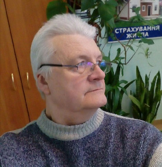

 Вітаю вас, шановні друзі!
У зв’язку з пандемією я не можу приділити стільки уваги, скільки ви заслуговуєте, бо перед усім піклуюсь про своє та ваше здоров’я, і тому намагаюсь, щоб ваше перебування в офісі було максимально безпечним і не тривалим.
Я багато думав (це я люблю) і вирішив, що найнебезпечніше буде, якщо спілкуватимемося ще і онлайн.
Так я зможу відповісти на всі ваші запитання стосовно страхування, які вас цікавлять.
Задавайте їх в любий час, а я відповім на них протягом робочого дня.
А офіс теж працює! Там же, де і був - проспект Героїв Сталінграду 169/1, на теріторії “Автостилю” між Новою поштою та будівництвом висоток.
Я один з небагатьох страховий агент, який може застрахувати онлайн і в той же час доступний для спілкування.
Декілька моїх колишніх клієнтів заходили до мене за допомогою, але я не мав права задовільнити їх прохання ні фізично (доступ маю лише до своїх клієнтів), ні з етичної сторони (у них свої агенти, які те ж профі).
То ж закликаю всіх вас до подальшої співпраці, шановні друзі!
Вайбер, Вацап, Телеграм: (099)300-54-64;